화공기사(구) (2015-09-19 기출문제)
1과목: 화공열역학
1. 과열상태의 증기가 150psia, 500℉에서 노즐을 통하여 30psia로 팽창한다. 이 과정이 단열, 가역적으로 진행하여 평형을 유지한다고 할 때 노즐의 출구에서의 증기상태는 어떠한지 알고자 한다. 다음 설명 중 틀린 것은?
- 엔트로피 변화는 없다.
- 수증기표(steam table)를 이용한다.
- 몰리에 선도를 이용한다.
- 기체인지 액체인지는 알 수 없다.
(정답률: 61%)

2. 다음 도표 상의 점 A로부터 시작되는 여러 경로 중 액화가 일어나지 않는 공정은?
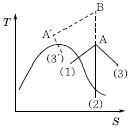
- A → (1)
- A → (2)
- A → (3)
- A → B → A' → (3')
(정답률: 76%)
3. 다음 T-S 선도에서 건도 x인 (1)에서의 습증기 1kg당 엔트로피는 어떻게 표시되는가? (단, 건도 x는 습증기 중 증기의 질량분율이고 V는 증기, L은 액체를 나타낸다.)
- SV+x(SV-SL)
- SL+xSV
- SVx+SL(1-x)
- SLx+SV(1-x)
(정답률: 64%)
4. 3성분계의 기-액 상평형 계산을 위하여 필요한 최소의 변수의 수는 몇 개인가? (단, 반응이 없는 계로 가정한다.)
- 1개
- 2개
- 3개
- 4개
(정답률: 67%)
5. 열의 일당량을 옳게 나타낸 것은?
- 427kgfㆍm/kcal
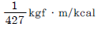
- 427kglㆍm/kgf
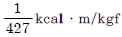
(정답률: 65%)
6. 화학반응의 평형상수 K의 정의로부터 다음의 관계식을 얻을 수 있을 때 이 관계식에 대한 설명중 틀린 것은?
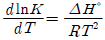
- 온도에 대한 평형상수의 변화를 나타낸다.
- 발열반응에서는 온도가 증가하면 평형상수가 감소함을 보여준다.
- 주어진 온도구간에서 △H°가 일정하면 lnK를 T의 함수로 표시했을 때 직선의 기울기가
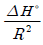
이다. - 화학반응의 △H°를 구하는 데 사용할 수 있다.
(정답률: 71%)
7. 기호의 의미가 다음과 같을 때 수식의 설명으로 옳은 것은?
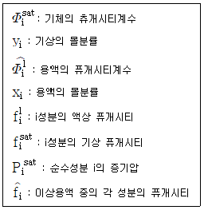
- 증기가 이상기체라면
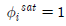
이다. - 이상용액인 경우
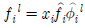
이다. - 루이스-랜덜의 법칙(Lewis-Randal의 rule)에서
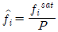
이다. - 라울의 법칙은
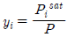
이다.
(정답률: 66%)
8. 가역단열 과정은 다음 중 어느 과정과 같은가?
- 등엔탈피 과정
- 등엔트로피 과정
- 등압 과정
- 등온 과정
(정답률: 74%)
9. 727℃에서 다음 반응의 평형압력 KP=1.3atm 이다. CaCO3(s) 30g을 10L 부피의 용기에 넣고 727℃로 가열하여 평형에 도달하게 하였다. CO2가 이상기체방정식을 만족시킨다고 할 때 평형에서 반응하지 않은 CaCO3(s)의 몰%는 얼마인가? (단, CaCO3의 분자량은 100이다.)
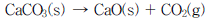
- 12%
- 17%
- 24%
- 47%
(정답률: 41%)
10. 비흐름 가역과정에서 압축(또는 수축)에 의한 일이 없다고 가정할 때 이상기체의 내부에너지에 관한 설명으로 옳은 것은?
- 내부에너지는 압력만의 함수이다.
- 내부에너지는 온도만의 함수이다.
- 내부에너지는 부피만의 함수이다.
- 내부에너지는 온도 및 압력만의 함수이다.
(정답률: 78%)
11. 퓨개시티(fugacity)에 관한 설명 중 틀린 것은? (단, Gi는 성분 i의 깁스 자유에너지, f는 퓨개시티이다.)
- 이상기체의 압력 대신 비이상기체에서 사용된 새로운 함수이다.
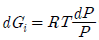
에서 P대신 퓨개시티를 쓰면 이 식은 실제기체에 적용할 수 있다.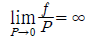
의 등식이 성립된다.- 압력과 같은 차원을 갖는다.
(정답률: 64%)
12. 다음 중 이상용액의 성질은? (단,
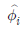
: 용액 중 성분 i의 퓨개시티계수,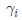
: 성분 i의 활동도계 수,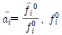
: 표준상태에서 이상기체 i의 퓨개시티,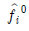
: 표준상태에서 용액 중 성분 i의 퓨개시티, xi: 성분 i의 액상 몰분율이다.)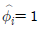
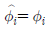
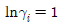
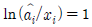
(정답률: 40%)
13. 120℃와 30℃ 사이에서 Carnot 증기기관이 작동하고 있을 때 1,000J의 일을 얻으려면 열원에서의 열량은 약 몇 J이어야 하는가?
- 1,540
- 4,367
- 5,446
- 6,444
(정답률: 67%)
14. 2⑤℃, 10.2atm에서의 과열 수증기의 퓨개시티 계수가 0.9415일 때의 퓨개시티(fugacity)는 약 얼마인가?
- 9.6atm
- 10.6atm
- 11.6atm
- 12.6atm
(정답률: 69%)
15. 화학포텐셜(chemical potential)에 대한 설명이 올바르지 못한 것은?
- 단위는 압력의 단위인 kPa로 표시된다.
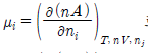
로 표시될 수 있다.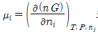
로 표시될 수 있다.- 평형에서 각 성분의 값들이 같아져야 한다.
(정답률: 62%)
16. Z = 1+BP와 같은 비리얼 방정식(virial equation)으로 표시할 수 있는 기체 1몰을 등온가역 과정으로 압력 P1에서 P2까지 변화시킬 때 필요한 일 W를 옳게 나타낸 식은? (단, Z는 압축인자이고 B는 상수이다.)
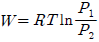
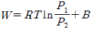
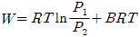
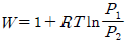
(정답률: 63%)
17.
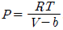
의 관계식에 따르는 기체의 퓨개시티계수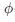
는? (단, b는 상수이다.)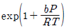
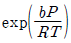
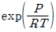
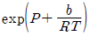
(정답률: 46%)
18. 요오드 증기가 그 고체와 평형에 있는 계에 대한 자유도는 얼마인가?
- 0
- 1
- 2
- 3
(정답률: 63%)
19. 20℃, 1atm에서 아세톤에 대해 부피팽창률 β=1.488×10－3(℃)－1, 등온압축률 k=6.2×10－5(atm)－1, V=1.287cm3/g이다. 정용 하에서 20℃, 1atm으로부터 30℃까지 가열한다면 그때 압력은 몇 atm인가?
- 1
- 5.17
- 241
- 20.45
(정답률: 63%)
20. 다음과 같은 임계 물성을 가진 두 개의 분자(A와B)가 동일한 이심 인자를 가지고 있다. 대응상태 원리가 성립한다고 할 때, 분자 A의 물성을 기준으로 분자 B의 물성을 옳게 유추한 것은? (단, 분자 A의 물성은 300K, 101.325kPa에서 24,000cm3/mol이다.)
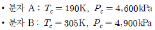
- T=300K, P=101.325kPa, V=36.214cm3mol
- T=481.6K, P=107.8kPa, V=36.214cm3mol
- T=300K, P=101.325kPa, V=26.215cm3mol
- T=481.6K, P=107.8kPa, V=26.215cm3mol
(정답률: 56%)
2과목: 단위조작 및 화학공업양론
21. 50mol% 에탄올 수용액을 밀폐용기에 넣고 가열하여 일정 온도에서 평형이 되었다. 이때 용액은 에탄올 27mol%이고, 증기조성은 에탄올 57mol%이었다. 원 용액의 몇 %가 증발되었는가?
- 23.46
- 30.56
- 76.66
- 89.76
(정답률: 56%)
22. NaCl 수용액이 15℃에서 포화되어 있다. 이 용액 1kg을 65℃로 가열하면 약 몇 g의 NaCl을 더 용해시킬 수 있는가? (단, 15℃에서의 용해도는 358g/1,000g H2O이고, 65℃에서의 용해도는 373g/1,000g H2O이다.)
- 7.54
- 10.53
- 15.⑤
- 20.3
(정답률: 47%)
23. 다음 중 경로에 관계되는 양은?
- 열
- 내부에너지
- 압력
- 엔탈피
(정답률: 70%)
24. 15℃에서 포화된 NaCl 수용액 100kg을 65℃로 가열하였을 때 이 용액에 추가로 용해시킬 수 있는 NaCl은 약 몇 kg인가? (단, 15℃에서 NaCl의 용해도는 6.12kmol/1,000kg H2O, 65℃에서 NaCl의 용해도는 6.37kmol/1,000kg H2O이다.)
- 1.1
- 2.1
- 3.1
- 4.1
(정답률: 44%)
25. 80% 물을 함유한 솜을 건조시켜 초기 수분량의 60%를 제거시켰다. 건조된 솜의 수분함량은 약 몇 %인가?
- 39.2
- 48.7
- 52.3
- 61.5
(정답률: 53%)
26. 건식법으로 전기로를 써서 인광석을 환원 및 증발시키는 공정에서 배출가스가 지름 26cm의 강관을 통해 152.4cm/s의 속도로 로에서 나간다. 이 가스의 밀도가 0.0012g/cm3일 때 1일 배출가스량은 약 얼마인가?
- 5.4ton/day
- 6.4ton/day
- 7.4ton/day
- 8.4ton/day
(정답률: 56%)
27. 분자량 119인 화합물을 분석한 결과 질량%로 C 70.6%, H 4.2%, N 11.8%, O 13.4%이었다면 분자식은?
- C6H5NO2
- C6H4N2O
- C6H6N2O2
- C7H5NO
(정답률: 65%)
28. 표준상태에서 분자량이 30인 이상기체 100kg의 부피는 약 얼마인가?
- 55m3
- 65m3
- 75m3
- 85m3
(정답률: 64%)
29. 980N(Newton)은 몇 kgf인가?
- 9.8
- 10
- 100
- 980
(정답률: 54%)
30. 밀도 1.15g/cm3인 액체가 밑면의 넓이 930cm2, 높이 0.75m인 원통 속에 가득 들어있다. 이 액체의 질량은 약 몇 kg인가?
- 8.0
- 80.2
- 186.2
- 862.5
(정답률: 66%)
31. 공기를 왕복압축기를 사용하여 절대압력 1기압에서 64기압까지 3단(3stage)으로 압축할 때 각 단의 압축비는?
- 3
- 4
- 21
- 64
(정답률: 65%)
32. 본드(Bond)의 파쇄법칙에서 매우 큰 원료로부터 크기 Dp 입자들을 만드는 데 소요되는 일은 무엇에 비례하는가? (단, s는 입자의 표면적(m2), u는 입자의 부피(m3)를 의미한다.)
- 입자들의 부피에 대한 표면적비 : s/u
- 입자들의 부피에 대한 표면적비의 제곱근 : √s/u
- 입자들의 표면적에 대한 부피비 : u/s
- 입자들의 표면적에 대한 부피비의 제곱근 : √u/s
(정답률: 53%)
33. 비중이 1인 물이 흐르고 있는 관의 양단에 비중이 13.6인 수은으로 구성된 U자형 마노미터를 설치하여 수은의 높이차를 측정해보니 약 33cm이었다. 관 양단의 압력차(기압)는 얼마인가?
- 0.2
- 0.4
- 0.6
- 0.8
(정답률: 61%)
34. 50몰% 톨루엔을 함유하고 있는 원료를 정류함에 있어서 환류비가 1.5이고 탑상부에서의 유출물 중의 톨루엔의 몰분율이 0.96이라고 할 때 정류부(rectifying section)의 조작선을 나타내는 방정식은? (단, x : 용액 중의 톨루엔의 몰분율, y : 기상에서의 몰분율이다.)
- y=0.714x+0.96
- y=0.6x+0.384
- y=0.384x+0.64
- y=0.6x+0.2
(정답률: 50%)
35. 건조 특성곡선에서 항율 건조기간으로부터 감율 건조기간으로 바뀔 때의 함수율은?
- 전(total) 함수율
- 평형 함수율
- 자유 함수율
- 임계(critical) 함수율
(정답률: 69%)
36. 임계전단응력 이상이 되어야 흐르기 시작하는 유체는?
- 유사가소성 유체(pseudoplastic fluid)
- 빙햄가소성 유체(Binghamplastic fluid)
- 뉴톤 유체(Newtonian fluid)
- 팽창성 유체(dilatant fluid)
(정답률: 48%)
37. 두께 150mm의 노벽에 두께 100mm의 단열재로 보온한다. 노벽의 내면온도는 700℃이고, 단열재의 외면온도는 40℃이다. 노벽 10m2로부터 10시간 동안 잃은 열량은? (단, 노벽과 단열재의 열전도도는 각각 3.0 및 0.1kcal/mㆍhㆍ℃이다.)
- 6,285.7kcal
- 6,754.4kcal
- 62,857.0kcal
- 67,544kcal
(정답률: 42%)
38. 롤 분쇄기에 상당직경 4cm인 원료를 도입하여 상당직경 1cm로 분쇄한다. 분쇄원료와 롤 사이의 마찰계수가
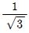
일 때 롤 지름은 약 몇 cm인가?- 6.6
- 9.2
- 15.3
- 18.4
(정답률: 41%)
39. 침수식 방법에 의한 수직관식 증발관이 수평관식 증발관보다 좋은 이유가 아닌 것은?
- 열전달계수가 크다.
- 관석이 생성될 경우 가열관 청소가 용이하다.
- 증기 중의 비응축 기체의 탈기효율이 좋다.
- 증발효과가 좋다.
(정답률: 47%)
40. 탑내에서 기체속도를 점차 증가시키면 탑내 액정체량(hold up)이 증가함과 동시에 압력손실은 급격히 증가하여 액체가 아래로 이동하는 것을 방해할 때의 속도를 무엇이라고 하는가?
- 평균속도
- 부하속도
- 초기속도
- 왕일속도
(정답률: 64%)
3과목: 공정제어
41. 바닥면적 4m2의 빈 수직탱크에 물이 f(t)=10L/min의 유속으로 공급될 때 시간에 따른 탱크 내부의 액위(m) 변화 h(t)와 라플라스 변환된 H(s)는? (단, Lapalce 변수 s의 단위는 [1/min] 이다.)
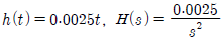
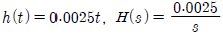
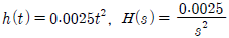
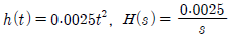
(정답률: 55%)
42.
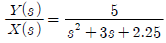
일 때 단위계단응답에 해당하는 것은?- 자연 진동
- 무진동 감쇠
- 무감쇠 진동
- 임계 감쇠
(정답률: 49%)
43. 시간지연이 θ이고 시정수가 τ인 시간지연을 가진 1차계의 전달함수는?
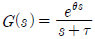
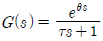
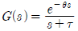
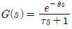
(정답률: 63%)
44. 어떤 1차계의 함수가
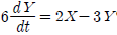
일 때 이 계의 전달함수의 시정수(times constant)는?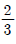
- 3
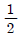
- 2
(정답률: 50%)
45. 공정과 제어기가 불안정한 Pole을 가지지 않는 경우에 다음의 Nyquist 선도에서 불안정한 제어계를 나타낸 그림은?
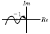
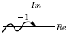
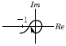
(정답률: 48%)
46. 다음 중 Bernoulli의 법칙을 이용한 Head-type 차압유량계는?
- Corriolis flowmeter
- Hot-wire anemometer
- Pitot tube
- Vortex shedder
(정답률: 55%)
47. 1차계 2개로 이루어진 2차계에 관한 설명으로 옳은 것은?
- 2차계의 전달함수는 1차계 전달함수의 2배이다.
- 2차계의 계단응답은 1차계의 과도응답보다 빠르다.
- 2차계의 감쇠계수(damping factor)는 1보다 작다.
- 2차계의 감쇠계수(damping factor)는 1과 같거나 크다.
(정답률: 39%)
48. 다음 Block diagram(블록선도)에서 C/R 을 옳게 나타낸 것은?
(정답률: 63%)
49. 다단제어(cascade control)에 관한 설명으로 틀린 것은?
- 상위(master) 제어기, 하위(slave) 제어기 모두 적분동작을 가지고 있어야 한다.
- 지역적으로 발생하는 외란의 영향을 미리 제어해 줌으로써, 그 영향이 상위 피제어변수(primary controlled variable)에 미치지 않도록 한다는 개념을 가진다.
- 하위(slave) 제어기를 구성하기 위한 하위 피제어 변수가 필요하며, 하위 피제어 변수와 관련된 공정의 동특성이 느릴수록 제어성능이 나빠진다.
- 다단제어의 하위 제어계는 상위 제어기의 대상 공정을 선형화시키는 효과를 준다.
(정답률: 40%)
50. 다음 미분방정식 해의 라플라스 함수는?
(정답률: 54%)
51. 어떤 제어계의 특성방정식이 다음과 같을 때 임계주기(ultimate period)는 얼마인가?
- π
(정답률: 46%)
52. 개루프 안정공정(open-loop stable process)에 다음 제어기를 적용하였을 때, 일정한 설정치에 대해 off-set이 발생하는 것은?
- P형
- I형
- PI형
- PID형
(정답률: 57%)
53. 특성방정식이 1+Kc/(S+1)(S+2)=0으로 표현되는 선형 제어계에 대하여 Routh-Hurwitz의 안정 판정에 의한 Kc의 범위를 구하면?
- Kc ＜ -1
- Kc ＞ -1
- Kc ＞ -2
- Kc ＜ -2
(정답률: 41%)
54. 다음에서 Servo problem인 경우 Proportional control(Gc=Kc)의 offset은? (단, TR(t)=U(t)인 단위계단신호이다.)
- 0
(정답률: 48%)
55. 측정 가능한 외란(measurable disturbance)을 효과적으로 제거하기 위한 제어기는?
- 앞먹임 제어기(feedforward controller)
- 되먹임 제어기(feedback controller)
- 스미스 예측기(Smith predictor)
- 다단 제어기(cascade controller)
(정답률: 61%)
56. 라플라스 변환을 이용하여 미분방정식 +5X=0, X(0)=10을 X(t)에 관하여 풀면?
- e-5t+9
- 5e-5t+5
- e-5t+10
- 10e-5t
(정답률: 57%)
57. 전달함수가 인 계의 Step response가 진동 없이 최종치에 접근하려면 값은 얼마인가?
- 1
- 2
- 3
- 4
(정답률: 47%)
58. , y(0)=1 에서 라플라스 변환 Y(s)는 어떻게 주어지는가?
(정답률: 50%)
59. 그림과 같은 산업용 스팀보일러의 스팀발생기에서 조작변수 유량(x3)과 유량(x5)을 조절하여 액위(x2)와 스팀압력(x6)을 제어하고자 할 때 틀린 설명은? (단, FT, PT, LT는 각각 유량, 압력, 액위전송기를 나타낸다.)
- 압력이 변하면 유량이 변하기 때문에 Air, Fuel, Boiler feed water의 공급압력은 외란이 된다.
- 제어성능 향상을 위하여 유량 x3, x4, x5를 제어하는 독립된 유량제어계를 구성하고 그 상위에 액위와 압력을 제어하는 다단제어계(cascade control loop)를 구성하는 것은 바람직하다.
- x1의 변화가 x2와 x6에 영향을 주기 전에 선제적으로 조작변수를 조절하기 위해서 피드백 제어기를 추가하는 것이 바람직하다. (이때, x1은 측정 가능하다.)
- Air와 Fuel 유량은 독립적으로 제어하기보다는 비율(ratio)을 유지하도록 제어되는 것이 바람직하다.
(정답률: 47%)
60. 다음 중 공정제어의 일반적인 기능에 관한 설명으로 가장 거리가 먼 것은?
- 외란의 영향을 극복하며 공정을 원하는 상태에 유지시킨다.
- 불안정한 공정을 안정화시킨다.
- 공정의 최적 운전조건을 스스로 찾아준다.
- 공정의 시운전 시 짧은 시간 안에 원하는 운전상태에 도달할 수 있도록 한다. 공정의 최적의 조건을 스스로 찾을 수 없다.
(정답률: 53%)
4과목: 공업화학
61. 다음의 O2 : NH3의 비율 중 질산 제조공정에서 암모니아 산화율이 최대로 나타나는 것은? (단, Pt 촉매를 사용하고 NH3 농도가 9%인 경우이다.)
- 9 : 1
- 2.3 : 1
- 1 : 9
- 1 : 2.3
(정답률: 62%)
62. 다음 중 칼륨 비료에 속하는 것은?
- 유안
- 요소
- 볏집재
- 초안
(정답률: 61%)
63. 석유 정제에 사용되는 용제가 갖추어야 하는 조건이 아닌 것은?
- 선택성이 높아야 한다.
- 추출할 성분에 대한 용해도가 높아야 한다.
- 용제의 비점과 추출성분의 비점의 차이가 적어야 한다.
- 독성이나 장치에 대한 부식성이 작아야 한다.
(정답률: 75%)
64. Sylvinite 중 NaCl의 함량은 약 몇 wt%인가?
- 40%
- 44%
- 56%
- 60%
(정답률: 53%)
65. 암모니아 합성 공업의 원료가스인 수소가스 제조공정에서 2차 개질공정의 주반응은?
- CO＋H2O → CO2＋H2
- C＋O2 → CO2
(정답률: 45%)
66. 다음 중 윤활유 정제에 많이 사용되는 용제(solvent)는?
- Furfural
- Benzene
- Toluene
- n-Hexane
(정답률: 56%)
67. 폐수처리나 유해가스를 효과적으로 처리할 수 있는 광촉매를 이용한 처리기술이 발달되고 있는데, 다음 중 광촉매로 많이 사용되고 있는 물질로 아나타제, 루틸 등의 결정상이 존재하는 것은?
- MgO
- CuO
- TiO2
- FeO
(정답률: 67%)
68. 다음 중 고분자의 유리전이온도를 측정하는 방법이 아닌 것은?
- Differential scanning calorimetry
- Dilatometry
- Atomic force microscope
- Dynamic mechanical analysis
(정답률: 60%)
69. 다음 중 비중이 제일 작으며 Polyethylene film보다 투명성이 우수한 것은?
- Polymethylmethacrylate
- Polyvinylalcohol
- Polyvinylidene
- Polypropylene
(정답률: 49%)
70. 플라스틱 분류에 있어서 열경화성 수지로 분류되는 것은?
- 폴리아미드수지
- 폴리우레탄수지
- 폴리아세탈수지
- 폴리에틸렌수지
(정답률: 57%)
71. 벤젠의 니트로화 반응에서 황산 60%, 질산 24%, 물 16%의 혼산 100kg을 사용하여 벤젠을 니트로화할 때 질산이 화학양론적으로 전량 벤젠과 반응하였다면 D.V.S. 값은 얼마인가?
- 4.54
- 3.50
- 2.63
- 1.85
(정답률: 43%)
72. 염소(Cl2)에 대한 설명으로 틀린 것은?
- 염소는 식염수의 전해로 제조할 수 있다.
- 염소는 황록색의 유독가스이다.
- 건조상태의 염소는 철, 구리 등을 급격하게 부식시킨다.
- 염소는 살균용, 표백용으로 이용된다.
(정답률: 52%)
73. 다음 중 열가소성 수지는?
- 페놀수지
- 초산비닐수지
- 요소수지
- 멜라민수지
(정답률: 55%)
74. 중질유를 열분해하여 얻는 가솔린은?
- 개질가솔린
- 직류가솔린
- 알킬화가솔린
- 분해가솔린
(정답률: 52%)
75. 소금의 전기분해에 의한 가성소다 제조에 있어서 전류효율은 94%이며 전해조의 전압은 4V이다. 이때 전력효율은 약 얼마인가? (단, 이론 분해전압은 2.31V이다.)
- 51.8%
- 54.3%
- 57.3%
- 60.9%
(정답률: 45%)
76. 벤젠으로부터 아닐린을 합성하는 단계를 순서대로 옳게 나타낸 것은?
- 수소화, 니트로화
- 암모니아화, 아민화
- 니트로화, 수소화
- 아민화, 암모니아화
(정답률: 58%)
77. 전류효율이 90%인 전해조에서 소금물을 전기분해하면 수산화나트륨과 염소, 수소가 만들어진다. 매일 17.75ton의 염소가 부산물로 나온다면 수산화나트륨의 생산량은 약 몇 ton이 되겠는가?
- 16
- 18
- 20
- 22
(정답률: 40%)
78. 카프로락탐 관한에 설명으로 옳은 것은?
- 나일론 6,6의 원료이다.
- Cyclohexanone oxime을 황산처리하면 생성된다.
- Cyclohexanone과 암모니아의 반응으로 생성된다.
- Cyclohexane과 초산과 아민의 반응으로 생성된다.
(정답률: 50%)
79. Acetylene을 주원료로 하여 수은염을 촉매로 물과 반응시키면 얻어지는 것은?
- Methanol
- Stylene
- Acetaldehyde
- Acetophenone
(정답률: 68%)
80. 석유 정제공정에서 사용되는 증류법 중 중질유의 비점이 강하되어 가장 낮은 온도에서 고비점 유분을 유출시키는 증류법은?
- 상압증류
- 공비증류법
- 추출증류법
- 수증기증류법
(정답률: 45%)
5과목: 반응공학
81. 체류시간 분포함수가 정규분포함수에 가장 가깝게 표시되는 반응기는?
- 플러그 흐름(plug flow)이 이루어지는 관형반응기
- 분산이 작은 관형반응기
- 완전혼합(perfect mixing)이 이루어지는 하나의 혼합반응기
- 3개가 직렬로 연결된 혼합반응기
(정답률: 40%)
82. 400K에서 이상기체반응에 대한 속도가 =3.66PA2atm/h이다. 이 반응의 속도식이 다음과 같을 때, 반응속도상수의 값은 얼마인가?
- 120Lㆍmol－1ㆍh－1
- 120molㆍL－1ㆍh－1
- 3.66h－1ㆍmolㆍL－1
- 3.66h－1ㆍmolㆍL
(정답률: 36%)
83. 이상기체인 A와 B가 일정한 부피 및 온도의 반응기에서 반응이 일어날 때 반응물 A의 분압이 PA라고 하면 반응속도식이 옳은 것은?
(정답률: 45%)
84. HBr의 생성반응 속도식이 다음과 같을 때 k1의 단위는?
- (mol/m3)－1.5(s)－1
- (mol/m3)－1.0(s)－1
- (mol/m3)－0.5(s)－1
- (s)－1
(정답률: 55%)
85. 다음 중 순환반응기(recycle reactor)를 사용하기 가장 적당한 반응은?
- 2차 비가역반응
- 1차 가역반응
- 자동촉매반응
- 직렬반응(series reaction)
(정답률: 57%)
86. 일반적으로 가스-가스 반응을 의미하는 것으로 옳은 것은?
- 균일계 반응과 불균일계 반응의 중간반응
- 균일계 반응
- 불균일계 반응
- 균일계 반응과 불균일계 반응의 혼합
(정답률: 55%)
87. 이상적 혼합반응기(ideal mixed flow reactor)에 대한 설명으로 옳지 않은 것은?
- 반응기 내의 농도와 출구의 농도가 같다.
- 무한개의 이상적 혼합반응기를 직렬로 연결하면 이상적 관형반응기(plug flow reactor)가 된다.
- 1차 반응에서의 전화율은 이상적 관형반응기보다 혼합반응기가 항상 못하다.
- 회분식 반응기(batch reactor)와 같은 특성을 나타낸다.
(정답률: 42%)
88. A → B의 화학반응에 대하여 소실되는 반응물의 속도는 일반적으로 어떻게 표시하는 것이 가장 적절한가? (단, n은 몰수, t는 반응시간, VR는 반응기부피이다.)
(정답률: 52%)
89. PFR 반응기에서 순환비 R을 무한대로 하면 일반적으로 어떤 현상이 일어나는가?
- 전화율이 증가한다.
- 공간시간이 무한대가 된다.
- 대용량의 PFR과 같게 된다.
- CSTR과 같게 된다.
(정답률: 57%)
90. 등온에서 0.9wt% 황산 B와 액상 반응물 A(공급원료 A의 농도는 4lb mol/ft3)가 동일부피로 CSTR에 유입될 때 1차 반응 진행으로 2×108lb/year의 생성물 C(분자량 : 62)가 배출된다. A의 전화율이 0.8이 되기 위한 반응기 체적(ft3)은? (단, 속도상수는 0.311min－1이다.)
- 40.4
- 44.6
- 49.4
- 54.3
(정답률: 23%)
91. 반응속도식을 구하는 방법 중 미분법에 의한 미분속도 해석법과 가장 관련이 없는 것은?
- 도식적 방법
- 수치해석법
- 다항식 맞춤법
- 반감기법
(정답률: 47%)
92. 액상 2차 반응에서 만약 CA=1mol/L일 때 -rA=-dCA/dt=0.1mol/Lㆍsec라고 하면 CA=5mol/L일 때 반응속도는 어떻게 되는가?
- 1.5mol/Lㆍsec
- 2.0mol/Lㆍsec
- 2.5mol/Lㆍsec
- 3.0mol/Lㆍsec
(정답률: 54%)
93. 체적이 일정한 회분식 반응기에서 다음과 같은 1차 가역반응이 초기 농도가 0.1mol/L인 순수 A로부터 출발하여 진행된다. 평형에 도달했을 때 A의 분해율이 85%이면 이 반응의 평형상수 Kc는 얼마인가?
- 0.18
- 0.57
- 1.76
- 5.67
(정답률: 39%)
94. A → Product인 액상 반응의 속도식은 다음과 같다. 혼합흐름반응기의 용적이 20L일 때 A가 60% 반응하는 데 필요한 공급속도를 구하면? (단, 초기 농도CA0=1mol/L이다.)
- 0.533mol/min
- 1.246mol/min
- 1.961mol/min
- 2.115mol/min
(정답률: 41%)
95. , 목적반응(D로의 반응) 차수(a1)가 비목적반응 차수(a2)보다 큰 경쟁반응에서 원하는 생성물을 최대화시키는 방법이 아닌 것은?
- PFR에서 순수 반응물을 입구로 직접 도입 한다.
- PFR보다 CSTR의 선택도를 크게 한다.
- 액상 반응이면 희석제 사용을 억제한다.
- CSTR보다 PFR의 선택도를 크게 한다.
(정답률: 55%)
96. 0차 균질반응이 -rA=10-3mol/Lㆍs로 플러그 흐름반응기에서 일어난다. A의 전화율이 0.9이고 CA0=1.5mol/L일 때 공간시간은 몇 초인가? (단, 이때 용적 변화율은 일정하다.)
- 1,300
- 1,350
- 1,450
- 1,500
(정답률: 52%)
97. A → R, CA0는 1mol/L인 반응이 회분식 반응기에서 일어날 때 1시간 후 전화율이 75%, 2시간 후 반응이 종결되었다. 이때 반응속도식(mol L－1 h－1)을 옳게 나타낸 것은?
- -rA=(1mol1/2L－1/2h－1)CA1/2
- -rA=(0.5mol1/2L－1/2h－1)CA1/2
- -rA=(1h－1)CA
- -rA=(0.5h－1)CA
(정답률: 24%)
98. 크기가 같은 반응기 2개를 직렬로 연결하여 A → R로 표시되는 액상 1차 반응을 진행시킬 때 최종 전화율이 가장 큰 경우는?
- 관형반응기＋혼합반응기
- 혼합반응기＋관형반응기
- 관형반응기＋관형반응기
- 혼합반응기＋혼합반응기
(정답률: 47%)
99. 균일계 1차 액상 반응 A -> R이 플러그반응기에서 전화율 90%로 진행된다. 다른 조건은 그대로 두고 반응기를 같은 크기의 혼합반응기로 바꾼다면 A의 전화율은 얼마로 되는가?
- 67%
- 70%
- 75%
- 81%
(정답률: 46%)
100. (목적물, ru=k1CAa1), 의 비목적물, rω=CAa2)의 두 반응이 평행하게 동시에 진행되는 반응에 대해 목적물의 선택도를 높이기 위한 설명으로 옳은 것은?
- a1과 a2가 같으면 혼합흐름반응기가 관형 흐름반응기보다 훨씬 더 낫다.
- a1이 a2보다 작으면 관형흐름반응기가 적절하다.
- a1이 a2보다 작으면 혼합흐름반응기가 적절하다.
- a1과 a2가 같으면 관형흐름반응기가 혼합 흐름반응기보다 훨씬 더 낫다.
(정답률: 54%)